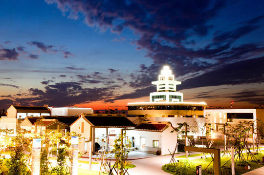
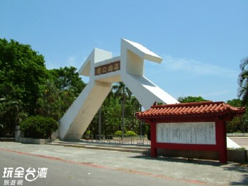

第四個景點-小港
紅毛港文化園區
紅毛港過去是位於高雄小港區的一個漁村，在日治時期為高雄州烏魚魚貨的主要產地，1967年隨著高雄港第二港口的開闢，紅毛港逐漸充滿貨櫃碼頭與工廠設施，當地仰賴漁業的海岸生態也遭受破壞，
同時因被劃入工業區而實施禁建，開始計畫遷村。最後經多年延宕，終於2007年紅毛港遷村完成，留下一處充滿回憶與文化的空地。
2012年，為了保留下紅毛港人生活的歷史文化軌跡，並結合原本的高字塔文化藝術園區與周邊環境資源，總面積有3.42公頃的紅毛港文化區因而誕生。
園內規畫有「高字塔旋轉餐廳」、「展示館」、「戶外展示區」、「天空步道」、「碼頭與候船室」、「觀海平台」等六大區域，
以世居於此的紅毛港人為規劃背景，展示紅毛港世代相傳的「潟湖」、「蝦苗養殖」、「捕烏魚與卡越仔」、「角頭廟」、「帆筏風華」等文化特色，
希望將紅毛港人的歷史軌跡透過園區興建而保留與傳承。
旅客可直接開車抵達紅毛港文化園區，空間寬敞的停車場讓您不用為車位煩惱，
但若想來趟特別的旅行，旅客可選擇到小港渡輪站搭乘豪華遊艇前往，乘著金色海洋的夕陽波光，進入多元豐富的紅毛港文化園區，絕對讓您不虛此行。

高雄公園
位於高雄小港國際航空站對面的高雄公園，於民國70年9月成立，佔地約5.8公頃，鬧中取靜的高雄公園，是小港區規模最大的公園，
進入大門的那一刻，就會看見雄偉的大門上，雕著「高雄公園」四字，
公園內一片綠意，另人迷醉在其中，鳥語花香伴隨在身旁，園中的水池，有時會跳著美姿的水舞，蜿蜒曲折的步道與貼心的涼椅，讓人忍不住在此佇足，
除此，公園內也設有兒童遊樂場，是當地居民重要的休憩場所。

連到首頁
連到第2頁
連到第3頁
連到第5頁
連到第6頁